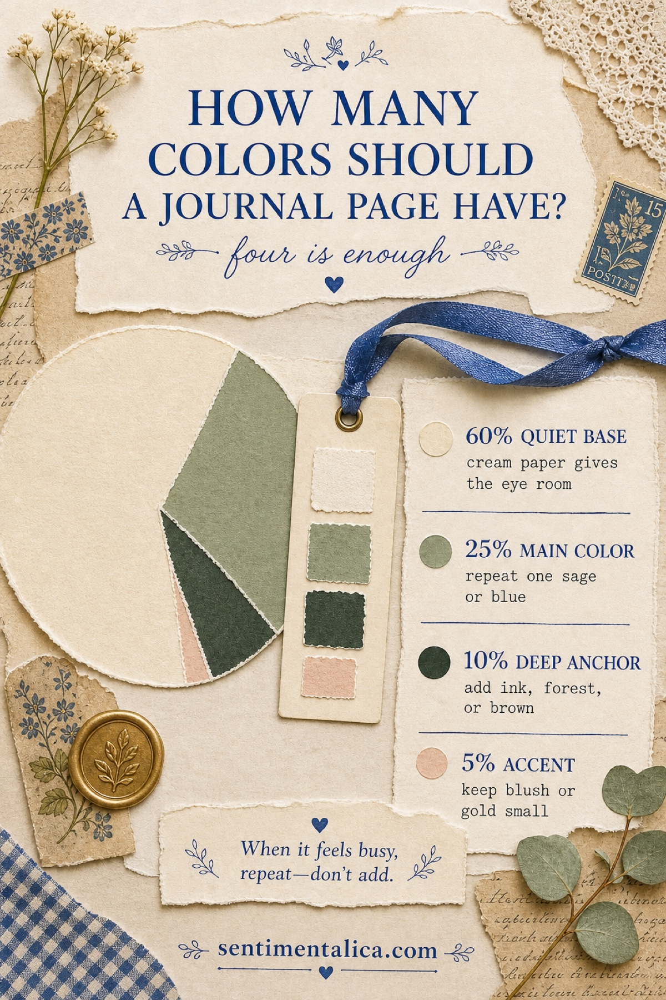
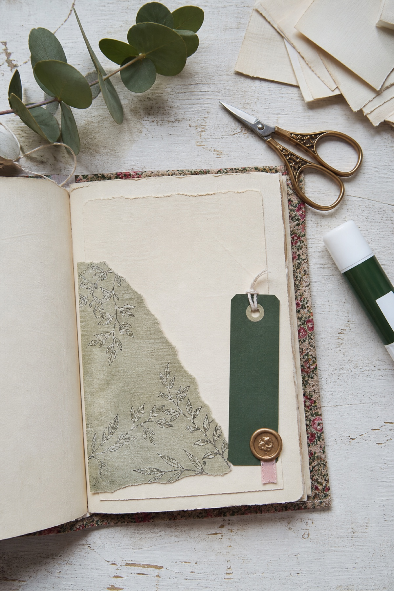
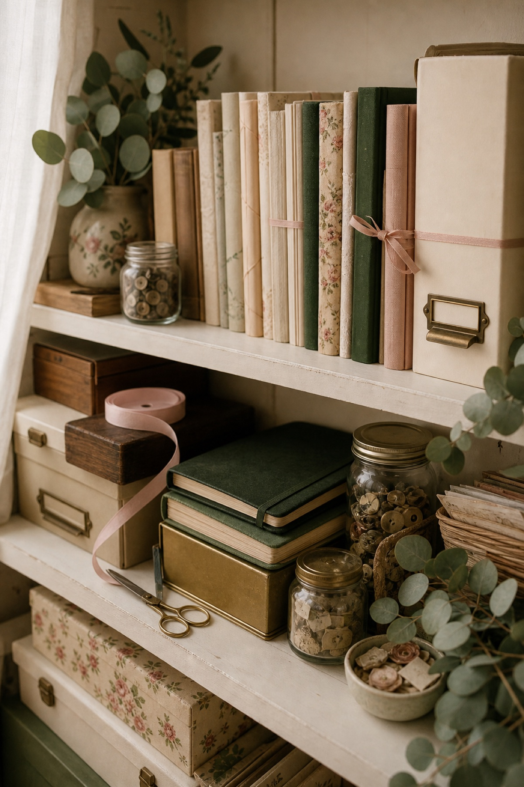
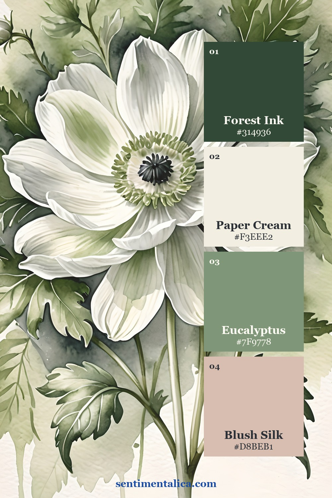
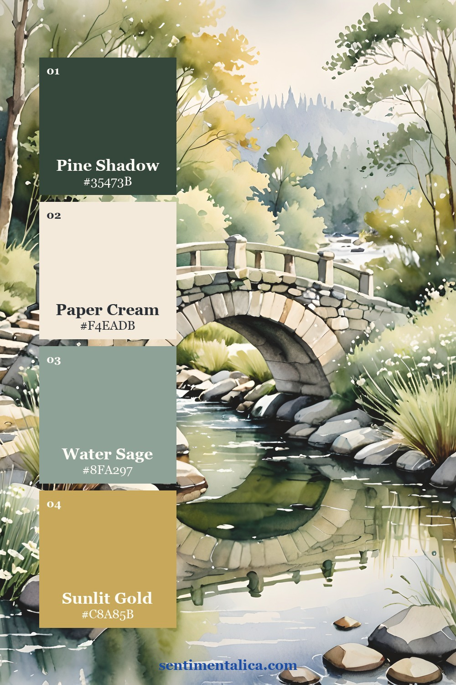
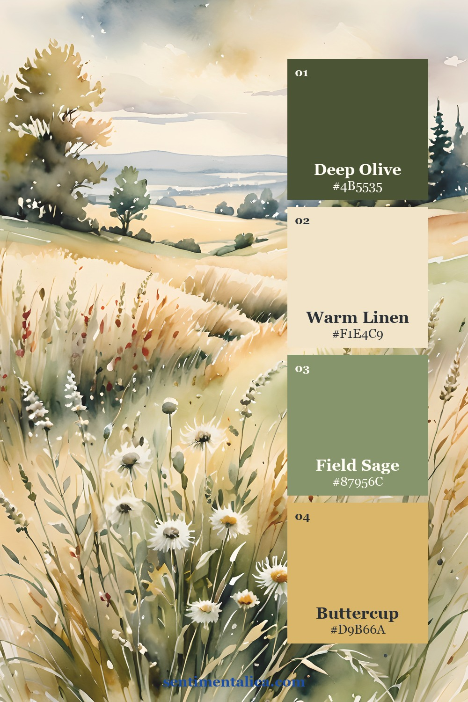
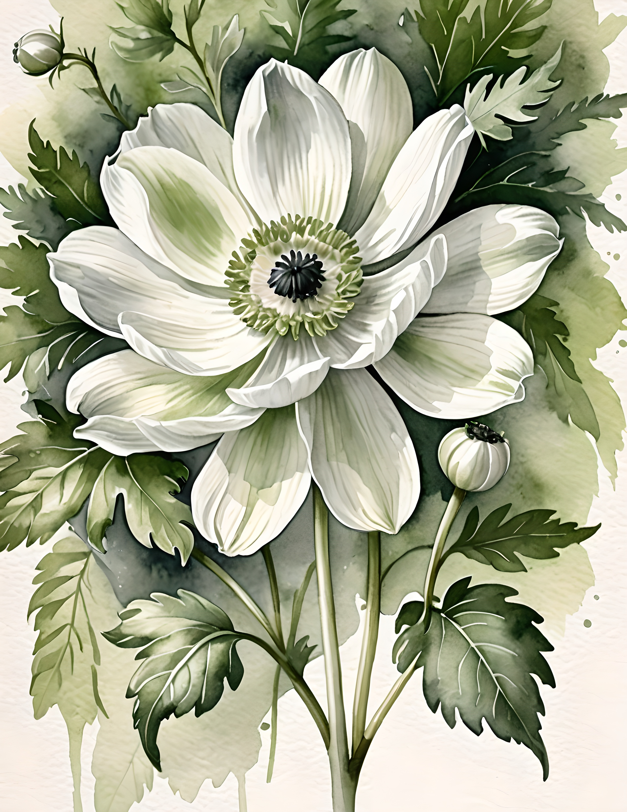
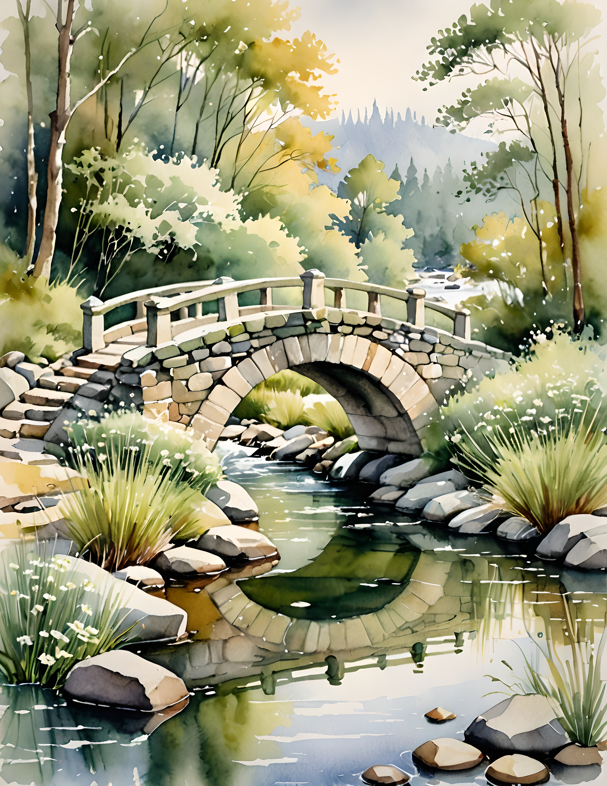
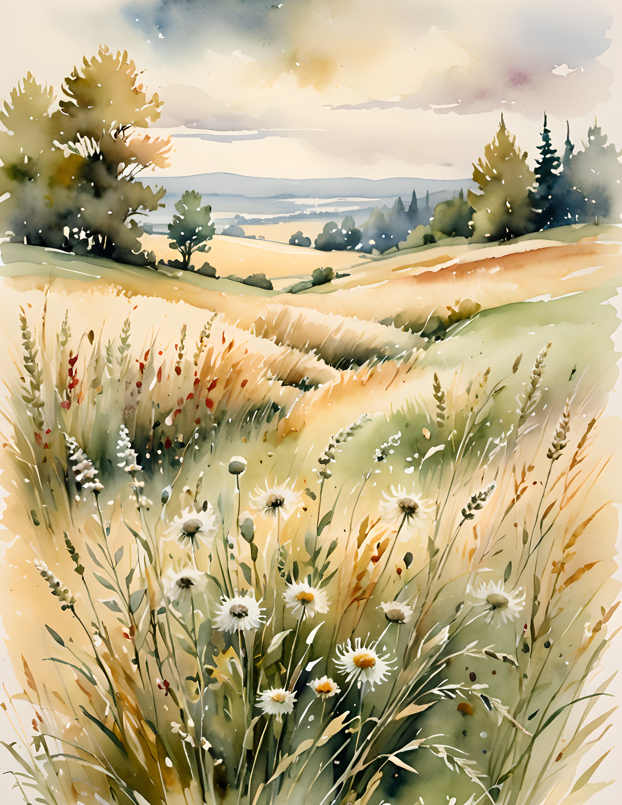

A junk journal page usually needs only three to five colors. Four is a particularly calm place to begin: one quiet base, one main color, one deeper anchor, and one small accent.
The colors do not need to appear in equal amounts. In fact, equal amounts are often why a page made from individually lovely papers begins to feel busy. Give each color a different job and let the proportions create the hierarchy.

The short answer: use four color roles
60% quiet base. Let cream, warm white, kraft, or a pale book page hold most of the composition. This is not empty space. It gives handwriting, torn edges, and small images enough room to be noticed.
25% main color. Choose the color that carries the mood: sage for a garden page, faded blue for something reflective, or dusty rose for a romantic memory. Repeat it in two or three places so the page feels connected.
10% deep anchor. Add forest green, ink blue, umber, charcoal, or another darker value. A narrow tag, photograph edge, stamp, or title strip is often enough. The anchor gives the eye somewhere to land.
5% accent. Keep the most charming color small. A blush ribbon tab, one gold seal, a red berry, or a butter-yellow flower will feel more special when it is not repeated everywhere.

Do not measure the percentages
Think of 60–25–10–5 as a visual order, not a calculation. Lay down the base first. Add the main color in one medium piece and one tiny echo. Place the dark anchor where you want the eye to pause. Add the accent last.
Then take a quick phone photograph or step away from the desk. If your eye jumps between several equally loud areas, make one quieter. Cover part of a patterned paper with cream, turn a bright tag over, or repeat the main color instead of introducing a fifth one.
When the colors still do not match
Usually the problem is not the hue but the temperature or intensity. A sharp white paper can make antique cream look dirty; a vivid leaf green can overpower muted sage. Add a bridge color that belongs to both sides: tea-stained paper between white and cream, olive between yellow and green, or dusty mauve between pink and brown.
You can also remove one color from the page without removing the object. Slip a loud ticket into a pocket, leave only its edge visible, or place translucent paper over it. Editing can be a layer, not a loss.

Three sage palettes from one botanical world
A coordinated collection does not force every spread to look the same. These palettes come from three authentic Silk Promise pages, but each creates a different feeling while keeping cream, green, and one restrained accent in conversation.



Sage Garden is the softest choice for letters, pressed flowers, and romantic memories. Golden Bridge has more depth and works well for reflective writing or old photographs. Meadow Light feels warmer and sunnier, especially with kraft paper and handwritten notes.
If you want to practise without committing to a collection, choose one image from the 100 free floral pictures. Pull four colors from it, assign the four roles, and build one small page before adding anything else.
See the colors inside real pages
The cream flower, shaded bridge, and sunlit meadow below show why the method is flexible. The dominant subject changes, but a quiet neutral, a family of greens, a deeper value, and one warm accent keep the pages related.



The useful question is not “Which extra color should I add?” It is “Which role is missing?” Begin with breathing room, repeat one main color, give the eye a dark resting point, and let the smallest accent remain precious.
Find more gentle methods in the Sentimentalica journal archive.